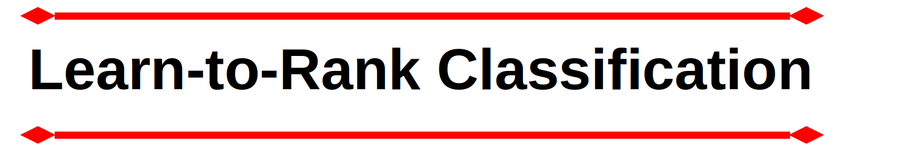
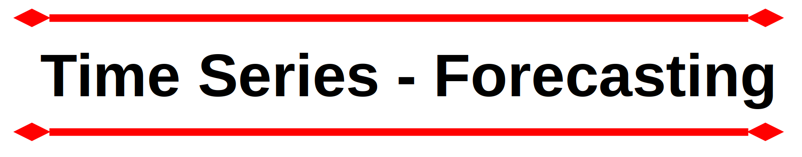

Antecedentes profesionales
Científico de Datos - Freelancer
Mejore su juego de datos con un científico de datos independiente experimentado, que aporta una potente combinación de experiencia estadística, delicadeza del aprendizaje automático y visión para los negocios. Con una trayectoria en la traducción de conjuntos de datos complejos en conocimientos estratégicos, me especializo en la creación de soluciones personalizadas que generan resultados significativos. Desde el modelado predictivo hasta el descubrimiento de patrones ocultos, mi compromiso es empoderar a las empresas con el potencial transformador de sus datos. Colaboremos y desbloqueemos el siguiente nivel de éxito basado en datos para su empresa.
Investigador Postdoctoral
Universidad de São Paulo - Brasil - 2021 - 2023
He desarrollado una investigación de datos deportivos donde investigué las exigencias competitivas de los mejores remeros del Mundo durante la última década. Los resultados de mi investigación mostraron que los remeros de clase mundial presentan un manejo de carrera similar independientemente de su grupo de edad, lo que sugiere que los entrenadores implementen estrategias de desarrollo de manejo de carrera desde una edad temprana. Además, los remeros alcanzan su máximo rendimiento a una edad similar en embarcaciones individuales y de doble tripulación, mientras que las embarcaciones con cuatro remeros presentan una edad más temprana.
Además, otras tareas incluyeron ayudar a los estudiantes de posgrado con su investigación, brindándoles asesoramiento sobre métodos científicos y manejo de datos (disputación de datos, análisis de datos).
Completé el contrato a tiempo, entregué mi informe final y envié mi investigación para su publicación.
Puedes encontrar mi CV académico completo aquí.
Learn-to-Rank Clasificación

La venta cruzada es una estrategia poderosa para las empresas que desean obtener mayores ingresos, construir una relación más sólida con los clientes actuales y brindar excelentes servicios o productos adicionales para ayudar a los clientes a resolver sus problemas. La empresa (ficticia) "Are you insured?" Proporciona servicios de seguro médico a miles de clientes. La empresa amplió su cartera de servicios y preguntó a sus clientes actuales si estarían interesados en adquirir su nuevo producto: el servicio de seguros de automóviles.
Después de que 304 mil clientes respondieron a la consulta, la empresa todavía tiene que ofrecer el servicio de seguro de automóvil a aproximadamente 75 mil clientes que no respondieron la investigación. Por limitaciones presupuestarias, la empresa sólo puede contactar a 20 mil clientes, de esos 75 mil. Por lo tanto, se necesitaría una lista clasificada y optimizada para aumentar las posibilidades de contactar a clientes con interés real en comprar este nuevo producto. Por lo tanto, se debe desarrollar una solución objetiva para optimizar la operación.
El producto final de este proyecto es un documento de Google Sheets que está vinculado al modelo de aprendizaje automático actualmente en producción. Este documento proporciona una lista de clientes que probablemente comprarán un seguro de automóvil, según las predicciones realizadas por el modelo.
Herramientas utilizadas en este proyecto:
Python.
Microsoft VSCode.
Render Cloud.
Flask, and Python API.
Regression and Classification Machine Learning Algorithms
GIT & GitHub.
Google Sheets App script

Proyecto de Ciencia de Datos "end-to-end", donde apliqué varias técnicas incluyendo CRISP-DS, modelos de aprendizaje automático para procesamiento de datos y pronóstico de ventas de una cadena de farmacias (ficticias).
Después de que el director financiero de la empresa presentara un problema empresarial, la tarea solicitada era pronosticar los ingresos de ventas durante seis semanas, basándose en un procedimiento de aprendizaje automático supervisado. Luego del procesamiento detallado de los datos y el envío del modelo a producción, se creó un bot en Telegram, donde el CFO podría acceder a las previsiones de cada tienda, a través de su teléfono móvil.
Este proyecto ofrece un producto de aprendizaje automático para pronosticar ventas con los beneficios de utilizar un chatbot para entregar los resultados de manera conveniente.
Herramientas utilizadas en este proyecto:
Python, Pandas, Numpy, Seaborn, requests, inflection, xgboost, scipy, boruta, matplotlib.
Sklearn.
Render Cloud.
Telegram.
Microsoft VSCode
GIT & GitHub.
ETL para Datos de Carrera de Remo

El remo cuenta con una rica tradición olímpica y es un deporte ampliamente practicado en numerosas universidades de todo el mundo. También se ha convertido en un ejercicio de estilo de vida popular. El deporte presenta tres competiciones importantes a nivel mundial categorizadas por grupos de edad: Sub 19, Sub 23 y Senior. Estas competiciones arrojan datos valiosos y cruciales para comprender los matices del remo. Desafortunadamente, aunque estos datos son públicos, se presentan en archivos PDF, lo que plantea desafíos para la organización y el análisis.
Creé un proceso para recopilar estos datos de la competencia de remeros de clase mundial. Los datos se almacenaron en más de 250 archivos PDF. Fue necesario descargar los archivos de una fuente pública, donde se almacenaban los PDF, crear códigos usando Python y bibliotecas específicas para extraer todo el contenido de cada archivo PDF. Una vez extraídos los datos en formato string, realicé todo el formateo y procesamiento para utilizar los datos en la investigación académica.
Herramientas utilizadas en este proyecto::
Python, Pandas, and PDFPlumber.
Microsoft VSCode.
GIT & GitHub
Optimización de las compras y ventas de inmuebles
Este proyecto analiza cómo maximizar las ganancias en un negocio inmobiliario. Utilicé Python y sus bibliotecas para análisis de datos y estadísticas para detectar propiedades con potencial de ganancias. De esta forma, la empresa podría comprar propiedades y venderlas con interesantes márgenes de beneficio. Los conocimientos de compra se basaron en las características de la propiedad que incluyen la ubicación, el tamaño de la propiedad y la cantidad de habitaciones, entre otras.
Construí una aplicación web utilizando Streamlit y Streamlit Share para facilitar y optimizar la toma de decisiones por parte de los stakeholders de la empresa. El resultado de la solución presentada, si se implementara, sería una ganancia promedio de $71700.00.
Herramientas utilizadas en este proyecto::
Python, Pandas, Numpy and Seaborn.
Jupyter Notebook.
Plotly and Folium interactive maps.
Streamlit Cloud.
Streamlit Python framework web.
Optimización del servicio de alquiler de bicicletas

Este proyecto proporciona información sobre el siguiente problema: ¿Cómo utilizan los clientes el servicio? ¿Cuáles son las demandas del servicio?
Mientras la empresa planifica acciones futuras, el equipo de marketing debe comprender cómo los clientes utilizan el servicio y qué se puede hacer para maximizar las ganancias.
Herramientas utilizadas en este proyecto::
R, ggplot2.
RStudio.
GIT and GitHub.